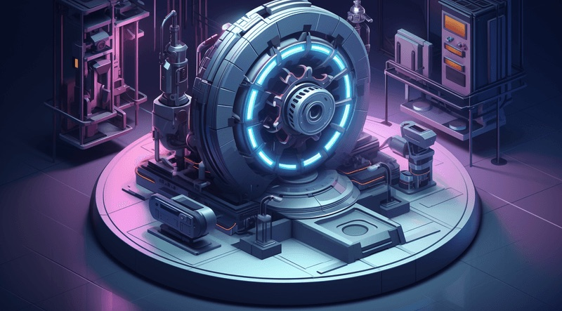

MK1 joins AMD
When we started MK1 in early 2023, ChatGPT had just launched and there was an obvious gap between what AI could theoretically do and what it could reliably deliver in the real world. Our vision was simple: build foundational technology to make AI fast, efficient, and generally useful.
We delivered. Our Flywheel inference engine now serves over a trillion tokens a day, and our Comprehension Engine gives LLMs a scalable reasoning and memory layer for coding applications and complex enterprise workflows.
I'm excited that MK1 is joining AMD, in Anush Elangovan's organization. Joining AMD is the right next step for our technology and our mission: we'll have the resources and platform to reach the scale we always envisioned, while our team continues building what we started. I'm deeply grateful to our backers, our customers, and especially the MK1 team, whose talent and execution turned our vision into reality.